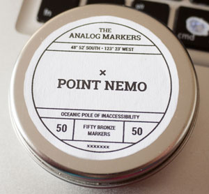

Massive 2 month weeknote. A friday publishing schedule quickly slips past when the days go by so fast. With all the travel, holidays, last minute changes and chasing-up leads, the weeknotes kind of took a backseat to other things.
Week #196
In week #196 we’ve been managing online surveys making sure the participants are answering and the customers are staying on top of the progress.

It was the 3rd edition of Sumendi this week. Summed is Basque for Volcano, but it is also the pop-up restaurant here in Reykjavik for Restaurant day. To help friends, we volunteer in the kitchen plating-up food, washing dishes and taking photos to document the day. Every time Sumendi appears, the smells and tastes are amazing.
We are working with a local client on redesigning some of the modules on their dashboard. They already have the technical expertise to implement the code, it is running currently, but they are interested in restyling it, reworking the design and making it much easier for their customers to understand the data. So we’ve been working with them on a few iterations and a few of their dashboard KPIs.
On a random note, we’ve been looking into edible paper called ‘oblate’. We found a company that produces food-safe paper made from potato starch. The story we had been told about is the use of this edible paper in Japan for use when taking drug store medication. The pharmacy would weigh out the power and put it onto the paper, which was folded-up and consumed in whole – paper and all. We’ve been looking for manufactures of this paper for a wild project idea.
Week #197
We have been working with an organization in Germany to conduct a survey across 40+ schools in their area. This week, we finally launched the online portal for the participants to answer the survey. It is just for one month and all the work and pestering is handled by our German contact, so we’re in a good shape to manage the progress and keep the servers running.
We’ve also been prepping a survey we’ll be pre-trialling in January 02015. This one is a staff survey for kindergarten employees and teachers here in Iceland. We’ve been running a similar staff survey in compulsory schools, so this isn’t a massive project. We’ve got all the updates and changes, they’ve been implemented, now it is a matter of setting-up the pre-test and seeing how things work.
On the dashboard front, we’ve made some more iterations and everyone seems happy. Within the same company we’re also working with another team both on some dashboard widgets, but also on some new UX workflows for the actual assembly line style machines. They have two versions of the machines and we are tasked with updating the UX on the screens while keeping the UI of the two systems similar. This part will pick-up in the new year after some of the dashboard projects are finalised and everyone has more time.
As the holiday season approaches, we got a request from an old client of ours. A few years ago we helped build for them a Christmas calendar website in WordPress. It was designed so that they could manage the whole thing on their own. We never heard from them in the intervening years until this week. With new staff and some deep code changes, they contacted us and we made some quick updates. It is always good to keep contact with old clients because you never know when they are going to need your help.
In week #196 we were looking into rice paper, but this week our pack of sample Tyvek paper has arrived. We now have a full range of samples and we know which we intend to use for our next prototype project. The downside is that the company is US based and won’t ship internationally unless it is a big order. We’re not ready with ordering a large stock, we need something inbetween the samples and enough to make a few prototypes before figuring out the possibilities of scaling-up any production.
We like to experiment with cartography, maps, projects and user flows. With a bit of downtime, some help from others and a few Cinema 4D tutorials, we managed to get back onto an older project which may yet see the light of day.
We have also been working on a very old project. We’ve always wanted to do something with Newspaper Club. So on the side we’ve been collecting articles we’ve written, photos we’ve taken, illustrations we’ve made and are slowly compiling them down into a newspaper. The main reason we haven’t published anything yet, is because we at that good problem to have of too much general content, so we’re getting focused to something more specific: Color. In doing so, we’re not at quite enough content for a full paper yet. It means we’ll be writing new articles and taking more photos. It is one of our goals for 02015 to actually finish and publish this through newspaper club.
Week #198
Not many notes for this week. We had a face to face meeting about some of our dashboard modules and learnt a bit more about their requirements and got to see some of the hardware which the UI will be running.
As part of our side project Analog.is, we created a small accoutrement for the notebooks. They are Analog Markers, small metal bookmarks which double as a pointer to where you left off. Our first set of markers are based off of Points of Inaccessibility, specifically Point Nemo. We finished the design and sent it off to the printers. It eventually arrived in week #203. Since we had pre-orders, we quickly put them into the post the next day. Of the 25 tins we ordered, 23 have already been claimed.
Week #199
This week we closed our high school student survey and exported the data. This the second year we’ve run this survey. It is almost clock-work now. Which is great because it allows us to focus on the harder problems while automating and repeating what works.
We also made the call a few weeks ago to depreciate an old system in favour if the new survey reporting application. This means that we needed to move all the reports and data out of the old system and into the new one. Most of the code we had written was to take CSV files and convert that into SQL insert or update statements. Now we’ll change that code to create report json files from the CSVs which can be imported into our new reports system. All of the final piece of the puzzle are pretty well defined as is the raw data, now it is just the bridge between the two that needs updating and we’ve been making progress this week.
Week #200
This week has been reported as mostly meetings. Some migration progress, but mostly meetings.
Two new potential client meetings this week. Both Icelandic, local companies, both looking for help visualising data that they already have in new and interesting ways. The general feeling is pretty good for both projects, we’ve sent off past projects and case studies relevant to what they do. We’ve also worked with some of the team members at previous companies. Iceland is VERY small sometimes and the tech scene can be even smaller. After the holidays in the new year week #204, we’ll follow-up and pick-up any loose threads.
The other meetings were about survey progress and plans for the new year. There is a lot of planning and preparation going on and everyone is busy with end-of-year deadlines.
Week #201
Way back in week #165, Five Simple Steps, the publisher of Designing with Data closed their doors. At that point we got the copyright back to the book. Sadly we haven’t done nearly as much with the book as we’d hoped. We’ve shopped around the idea of doing a second edition, but no one has been super keen. To keep a pulse for the book we sent out a newsletter this week to all the previous buyers, workshop attendees and others on the list. It is something to do more often than we do, but preaching to the choir isn’t going to sell more books. It can generate leads, but we want to avoid spammy emails.
We’ve been ruminated on one of our old internal projects Virkisfell this week. Mostly working offline writing ideas and a sort of mission statement without being so corporate about it. Since this project has a big volunteer component to it, we wanted to list out all the things a volunteer is and is not to keep us from sliding into the easy stuff like rating people like you would a book or song. I think this will better inform the product and any team member who might be working on it in the future.
One of our very long running consulting projects has been with the City of Reykjavik and their various calendar solutions. Over the summer they finally brought it in house and this week was the soft launch of their new product. In the new few weeks it will be come much more public. We’ve made two small open-source projects which utilize the API and the data in fun, interesting and useful ways. All of this should be on the new website when it launches.
This was also the last week working so closely with Vísar, the survey company. Some of the (optional.is) team founded Vísar (then Skólapúlsinn) in 02008 and have been working there pretty much full-time as employees for the last year or two as the new systems were built, deployed, tested and new staff trained. As of this week, we’ll be getting our employees back full-time at (optional.is) and will only be helping Vísar out a few hours each week for the near future. Hence all the meetings, negotiations and organizing the previous weeks (also partly due to the lack of weeknotes).

Finally, this week we and Borgarmynd gave a short 30 minute presentation to Landupplýsingar. It was their small annual conference about mapping and we came in and showed off and hopefully inspired them with some of our stranger and more bizarre mapping projects over the year. Given the questions afterwards, the smiles and a few discussions, I think we managed to do that.
Week #202
Not many notes for this week. It was spent mostly wrapping-up projects, loose ends, getting the financials all ready for the new year. Iceland runs on a calendar year facial year as well, so in early Jan we’ll need to turn in our tax report for the end of 02014 and all the other financial info needed to general our yearly report to the government. Not as fun as client work, but something that needs to be done. We enjoy our workflow for financials and time tracking which allows us to create our annual reports broken down by hours spent and income per client and project.
Week #203
More time off for the holidays. We spent it mostly finding some bugs in our calendar code. We have several scripts on GitHub to generate printable calendars. They are all focused on weeks, quarters and years, but the problem is that 02015 has 53 weeks rather than the standard 52. This throws off a lot of our code which wrongly assumed 13 weeks per quarter and that Q1 started with the week of January 1st – neither are always true.
There are still a few bugs to be cleared out, not so much from a technical stand point, but more for a social one. At the moment we’re considering just SKIPPING week 53 like it didn’t exist. It is unlikely it will be used much given it has new year’s eve in it, most people will be off and not planning or scheduling meetings this week. So we can probably omit it for the sake of design, but we’ll see.
We also settled on a topic for our 02015 newsletters. We are focusing on the senses and we’re going to try a few new ideas and sections in the email. If you haven’t signed-up for the newsletter you should.
Bric-à-brac
The last two months have seen some incredible stories which we talked about and watched at the office. I’m sure these are just a small sample of what happened, they are only things we wrote down, received, attended or emailed around the office.
Philae lander is the first spacecraft to land on an asteroid. Even with all the technical troubles this is a massive step forward for space exploration, space mining and for colonisation of other planets. One idea for space travel is to have inter/intrastellar pit stops for more fuel. That fuel being hydrogen from ice trapped in asteroids. We have to be able to land on them before mining them.
Sticking with space, over the last two months saw the Orion Launch. The Orion spacecraft is the newest in NASA’s toolkit after the retirement of the space shuttle. It follows similarly to the Apollo spacecraft which was placed at the top of a rocket and contained only the crew capsule.
In preparation for 02015 and our exploration of paper and Tyvek we ordered a Matador Blanket. It is super light-weight and made from nylon. One of our paper project ideas revolves around being super light and we wanted to check these materials as an alternative for us to use instead.
The last conference we attended in 02014 was Beyond Tellerand in Berlin. We talked about going from Digital to Analog. It was very well received and a lot of people came to talk to us afterwards. One of the conversations lead to Björn Ganslandt sending us some German A3 zines: Rückenkälte they had made. They are beautiful small-run products which we’re happy to now own.